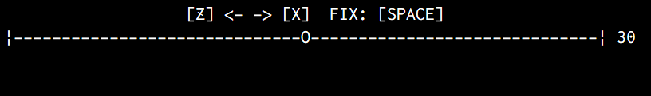
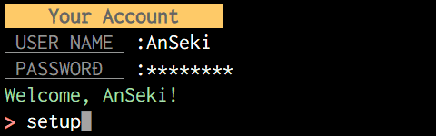

readlineSync


Synchronous Readline for interactively running to have a conversation with the user via a console(TTY).
readlineSync tries to let your script have a conversation with the user via a console, even when the input/output stream is redirected like your-script <foo.dat >bar.log.
| Basic Options | Utility Methods | Placeholders |
- Simple case:
var readlineSync = ; // Wait for user's response.var userName = readlineSync;console; // Handle the secret text (e.g. password).var favFood = readlineSync;console;May I have your name? CookieMonsterHi CookieMonster!What is your favorite food? ****Oh, CookieMonster loves tofu!- Get the user's response by a single key without the Enter key:
var readlineSync = ;if readlineSync // 'Y' key was pressed. console; // Do something... else // Another key was pressed. console; // Do something...- Let the user choose an item from a list:
var readlineSync = animals = 'Lion' 'Elephant' 'Crocodile' 'Giraffe' 'Hippo' index = readlineSync;console;[1] Lion[2] Elephant[3] Crocodile[4] Giraffe[5] Hippo[0] CANCEL Which animal? [1...5 / 0]: 2Ok, Elephant goes to your room.- An UI like the Range Slider:
(PressZorXkey to change a value, and Space Bar to exit)
var readlineSync = MAX = 60 MIN = 0 value = 30 key;console;while true console; key = readlineSync; if key === 'z' if value > MIN value--; else if key === 'x' if value < MAX value++; else break; console;
- Handle the commands repeatedly, such as the shell interface:
readlineSync;console;> add pic01.png archivepic01.png is added into archive.> delete pic01.pngRequested command is not available.> remove pic01.pngpic01.png is removed.> byeExitedInstallation
npm install readline-syncQuick Start
How does the user input?
- Type a reply to a question, and press the Enter key (A)
- Type a keyword like a command in prompt, and press the Enter key (B)
- Press a single key without the Enter key (C)
- Receive a parsed command-name and arguments
- Receive an input repeatedly
- Receive a parsed command-name and arguments repeatedly
- Receive an input with prompt that is similar to that of the user's shell
- Others
- Say "Yes" or "No"
- Say "Yes" or "No" explicitly
- Make the running of script continue when ready
- Choose an item from a list
- Others
Basic Methods
These are used to control details of the behavior. It is recommended to use the Utility Methods instead of Basic Methods if it satisfy your request.
question
answer = readlineSyncDisplay a query to the user if it's specified, and then return the input from the user after it has been typed and the Enter key was pressed.
You can specify an options (see Basic Options) to control the behavior (e.g. refusing unexpected input, avoiding trimming white spaces, etc.). If you let the user input the secret text (e.g. password), you should consider hideEchoBack option.
The query may be string, or may not be (e.g. number, Date, Object, etc.). It is converted to string (i.e. toString method is called) before it is displayed. (see Note also)
It can include the placeholders.
For example:
program = readlineSync;prompt
input = readlineSyncpromptoptionsDisplay a prompt-sign (see prompt option) to the user, and then return the input from the user after it has been typed and the Enter key was pressed.
You can specify an options (see Basic Options) to control the behavior (e.g. refusing unexpected input, avoiding trimming white spaces, etc.).
For example:
while true command = readlineSyncprompt; // Do something...keyIn
pressedKey = readlineSyncDisplay a query to the user if it's specified, and then return a character as a key immediately it was pressed by the user, without pressing the Enter key. Note that the user has no chance to change the input.
You can specify an options (see Basic Options) to control the behavior (e.g. ignoring keys except some keys, checking target key, etc.).
The query is handled the same as that of the question method.
For example:
menuId = readlineSync;setDefaultOptions
currentDefaultOptions = readlineSyncChange the Default Options to the values of properties of newDefaultOptions Object.
All it takes is to specify options that you want change, because unspecified options are not updated.
Basic Options
prompt, hideEchoBack, mask, limit, limitMessage, defaultInput, trueValue, falseValue, caseSensitive, keepWhitespace, encoding, bufferSize, print, history, cd
An options Object can be specified to the methods to control the behavior of readlineSync. The options that were not specified to the methods are got from the Default Options. You can change the Default Options by setDefaultOptions method anytime, and it is kept until a current process is exited.
Specify the options that are often used to the Default Options, and specify temporary options to the methods.
For example:
readlineSync;a1 = readlineSync; // Input is limited to 3 things.a2 = readlineSync; // It's limited yet.a3 = readlineSync; // It's unlimited temporarily.a4 = readlineSync; // It's limited again.readlineSync;a5 = readlineSync; // Input is limited to new 2 things.a6 = readlineSync; // It's limited to 2 things yet.The Object as options can have following properties.
prompt
For prompt* methods only
Type: string or others
Default: '> '
Set the prompt-sign that is displayed to the user by prompt* methods. For example you see > that is Node.js's prompt-sign when you run node on the command line.
This may be string, or may not be (e.g. number, Date, Object, etc.). It is converted to string every time (i.e. toString method is called) before it is displayed. (see Note also)
It can include the placeholders.
For example:
readlineSync;// Display the memory usage always.readlineSync;[13148kb]$ foo[13160kb]$ bar[13200kb]$hideEchoBack
Type: boolean
Default: false
If true is specified, hide the secret text (e.g. password) which is typed by user on screen by the mask characters (see mask option).
For example:
password = readlineSync;console;PASSWORD: ********Login ...mask
Type: string
Default: '*'
Set the mask characters that are shown instead of the secret text (e.g. password) when true is specified to hideEchoBack option. If you want to show nothing, specify ''. (But it might be not user friendly in some cases.)
Note: In some cases (e.g. when the input stream is redirected on Windows XP), '*' or '' might be used whether other one is specified.
For example:
secret = readlineSync;limit
Limit the user's input.
The usage differ depending on the method.
For question* and prompt* methods
Type: string, number, RegExp, function or Array
Default: []
Accept only the input that matches value that is specified to this. If the user input others, display a string that is specified to limitMessage option, and wait for reinput.
- The string is compared with the input. It is affected by
caseSensitiveoption. - The number is compared with the input that is converted to number by
parseFloat(). For example, it interprets' 3.14 ','003.1400','314e-2'and'3.14PI'as3.14. And it interprets'005','5files','5kb'and'5px'as5. - The RegExp tests the input.
- The function that returns a boolean to indicate whether it matches is called with the input.
One of above or an Array that includes multiple things (or Array includes Array) can be specified.
For example:
command = readlineSyncpromptlimit: 'add' 'remove' /^clear?$/;// ** But `promptCL` method should be used instead of this. **file = readlineSync;// ** But `questionPath` method should be used instead of this. **ip = readlineSync;availableActions = ;if ! availableActions; if availableActions; if availableActions; if availableActions; action = readlineSyncpromptlimit: availableActions;// ** But `promptCL` method should be used instead of this. **For keyIn* method
Type: string, number or Array
Default: []
Accept only the key that matches value that is specified to this, ignore others.
Specify the characters as the key. All strings or Array of those are decomposed into single characters. For example, 'abcde' or ['a', 'bc', ['d', 'e']] are the same as ['a', 'b', 'c', 'd', 'e'].
These strings are compared with the input. It is affected by caseSensitive option.
The placeholders like '$<a-e>' are replaced to an Array that is the character list like ['a', 'b', 'c', 'd', 'e'].
For example:
direction = readlineSync; // 'l' or 'r'dice = readlineSync; // range of '1' to '6'limitMessage
For question* and prompt* methods only
Type: string
Default: 'Input another, please.$<( [)limit(])>'
Display this to the user when the limit option is specified and the user input others.
The placeholders can be included.
For example:
file = readlineSync;defaultInput
For question* and prompt* methods only
Type: string
Default: ''
If the user input empty text (i.e. pressed the Enter key only), return this.
For example:
lang = readlineSync;trueValue, falseValue
Type: string, number, RegExp, function or Array
Default: []
If the input matches trueValue, return true. If the input matches falseValue, return false. In any other case, return the input.
- The string is compared with the input. It is affected by
caseSensitiveoption. - The number is compared with the input that is converted to number by
parseFloat(). For example, it interprets' 3.14 ','003.1400','314e-2'and'3.14PI'as3.14. And it interprets'005','5files','5kb'and'5px'as5. Note that inkeyIn*method, the input is every time one character (i.e. the number that is specified must be an integer within the range of0to9). - The RegExp tests the input.
- The function that returns a boolean to indicate whether it matches is called with the input.
One of above or an Array that includes multiple things (or Array includes Array) can be specified.
For example:
answer = readlineSync;if answer === true console; else if answer === false console; else console;caseSensitive
Type: boolean
Default: false
By default, the string comparisons are case-insensitive (i.e. a equals A). If true is specified, it is case-sensitive, the cases are not ignored (i.e. a is different from A).
It affects: limit, trueValue, falseValue, some placeholders, and some Utility Methods.
keepWhitespace
For question* and prompt* methods only
Type: boolean
Default: false
By default, remove the leading and trailing white spaces from the input text. If true is specified, don't remove those.
encoding
Type: string
Default: 'utf8'
Set the encoding method of the input and output.
bufferSize
For question* and prompt* methods only
Type: number
Default: 1024
When readlineSync reads from a console directly (without external program), use a size bufferSize buffer.
Even if the input by user exceeds it, it's usually no problem, because the buffer is used repeatedly. But some platforms's (e.g. Windows) console might not accept input that exceeds it. And set an enough size.
Note that this might be limited by version of Node.js and environment running your script (Big buffer size is usually not required). (See also: issue, PR)
print
Type: function or undefined
Default: undefined
Call the specified function with every output. The function is given two arguments, display as an output text, and a value of encoding option.
For example:
- Pass the plain texts to the Logger (e.g. log4js), after clean the colored texts.

var readlineSync = chalk = log4js = logger user pw command; log4js;logger = log4js; readlineSync; console;user = readlineSync;pw = readlineSync;// Authorization ...console;command = readlineSyncprompt;- Output a conversation to a file when an output stream is redirected to record those into a file like
your-script >foo.log. That is, a conversation isn't outputted tofoo.logwithout this code.
readlineSync;var name = readlineSync;var loc = readlineSync;- Let somebody hear our conversation in real time.
It just uses a fifo with above sample code that was namedconv.js.
Another terminal:
mkfifo /tmp/fifocat /tmp/fifoMy terminal:
node conv.js >/tmp/fifoMay I have your name? OzHi Oz! Where do you live? Emerald CityAnd then, another terminal shows this synchronously:
May I have your name? OzHi Oz! Where do you live? Emerald Cityhistory
For question* and prompt* methods only
Type: boolean
Default: true
readlineSync supports a history expansion feature that is similar to that of the shell. If false is specified, disable this feature.
It keeps a previous input only. That is, only !!, !-1, !!:p and !-1:p like bash or zsh etc. are supported.
!!or!-1: Return a previous input.!!:por!-1:p: Display a previous input but do not return it, and wait for reinput.
For example:
while true input = readlineSyncprompt; console;> hello-- You said "hello"> !!hello-- You said "hello"> !!:phello> bye-- You said "bye"cd
For question* and prompt* methods only
Type: boolean
Default: false
readlineSync supports the changing the current working directory feature that is similar to the cd and pwd commands in the shell. If true is specified, enable this feature.
This helps the user when you let the user input the multiple local files or directories.
It supports cd and pwd commands.
cd <path>: Change the current working directory to<path>. The<path>can include~as the home directory.pwd: Display the current working directory.
When these were input, do not return, and wait for reinput.
For example:
while true file = readlineSync; console;File: cd foo-dir/bar-dirFile: pwd/path/to/foo-dir/bar-dirFile: file-a.js-- Specified file is /path/to/foo-dir/bar-dir/file-a.jsFile: file-b.png-- Specified file is /path/to/foo-dir/bar-dir/file-b.pngFile: file-c.html-- Specified file is /path/to/foo-dir/bar-dir/file-c.htmlUtility Methods
questionEMail, questionNewPassword, questionInt, questionFloat, questionPath, promptCL, promptLoop, promptCLLoop, promptSimShell, keyInYN, keyInYNStrict, keyInPause, keyInSelect
These are convenient methods that are extended Basic Methods to be used easily.
questionEMail
email = readlineSyncDisplay a query to the user if it's specified, and then accept only a valid e-mail address, and then return it after the Enter key was pressed.
The query is handled the same as that of the question method.
The default value of query is 'Input e-mail address: '.
Note: The valid e-mail address requirement is a willful violation of RFC5322, this is defined in HTML5. This works enough to prevent the user mistaking. If you want to change it, specify limit option.
For example:
email = readlineSync;console;Input e-mail address: abcInput valid e-mail address, please.Input e-mail address: mail@example.com-- E-mail is mail@example.comOptions
The following options have independent default value that is not affected by Default Options.
| Option Name | Default Value |
|---|---|
hideEchoBack |
false |
limit |
RegExp by HTML5 |
limitMessage |
'Input valid e-mail address, please.' |
trueValue |
null |
falseValue |
null |
The following options work as shown in the Basic Options section.
mask | defaultInput | caseSensitive | encoding | bufferSize |
print | history |
questionNewPassword
password = readlineSyncDisplay a query to the user if it's specified, and then accept only a valid password, and then request same one again, and then return it after the Enter key was pressed.
It's the password, or something that is the secret text like the password.
You can specify the valid password requirement to the options.
The query is handled the same as that of the question method.
The default value of query is 'Input new password: '.
Note: Only the form of password is checked. Check it more if you want. For example, zxcvbn is password strength estimation library.
For example:
password = readlineSync;console;Input new password: ************It can include: 0...9, A...Z, a...z, !"#$%&'()*+,-./:;<=>?@[\]^_`{|}~And the length must be: 12...24Input new password: *************Reinput a same one to confirm it: *************It differs from first one. Hit only the Enter key if you want to retry from first one.Reinput a same one to confirm it: *************-- Password is _my_password_Options
The following options have independent default value that is not affected by Default Options.
| Option Name | Default Value |
|---|---|
hideEchoBack |
true |
mask |
'*' |
limitMessage |
'It can include: $<charlist>\nAnd the length must be: $<length>' |
trueValue |
null |
falseValue |
null |
caseSensitive |
true |
The following options work as shown in the Basic Options section.
defaultInput | keepWhitespace | encoding | bufferSize | print |
And the following additional options are available.
charlist
Type: string
Default: '$<!-~>'
A string as the characters that can be included in the password. For example, if 'abc123' is specified, the passwords that include any character other than these 6 characters are refused.
The placeholders like '$<a-e>' are replaced to the characters like 'abcde'.
For example, let the user input a password that is created with alphabet and some symbols:
password = readlineSync;min, max
Type: number
Default: min: 12, max: 24
min: A number as a minimum length of the password.
max: A number as a maximum length of the password.
confirmMessage
Type: string or others
Default: 'Reinput a same one to confirm it: '
A message that lets the user input the same password again.
It can include the placeholders.
If this is not string, it is converted to string (i.e. toString method is called).
unmatchMessage
Type: string or others
Default: 'It differs from first one. Hit only the Enter key if you want to retry from first one.'
A warning message that is displayed when the second input did not match first one.
This is converted the same as the confirmMessage option.
Additional Placeholders
The following additional placeholder parameters are available.
charlist
A current value of charlist option that is converted to human readable if possible. (e.g. 'A...Z')
length
A current value of min and max option that is converted to human readable. (e.g. '12...24')
questionInt
numInt = readlineSyncDisplay a query to the user if it's specified, and then accept only an input that can be interpreted as an integer, and then return the number (not string) after the Enter key was pressed.
This parses the input as much as possible by parseInt(). For example, it interprets ' 5 ', '5.6', '005', '5files', '5kb' and '5px' as 5.
The query is handled the same as that of the question method.
Options
The following option has independent default value that is not affected by Default Options.
| Option Name | Default Value |
|---|---|
limitMessage |
'Input valid number, please.' |
The following options work as shown in the Basic Options section.
hideEchoBack | mask | defaultInput | encoding | bufferSize |
print | history |
questionFloat
numFloat = readlineSyncDisplay a query to the user if it's specified, and then accept only an input that can be interpreted as a floating-point number, and then return the number (not string) after the Enter key was pressed.
This parses the input as much as possible by parseFloat(). For example, it interprets ' 3.14 ', '003.1400', '314e-2' and '3.14PI' as 3.14.
The query is handled the same as that of the question method.
Options
The following option has independent default value that is not affected by Default Options.
| Option Name | Default Value |
|---|---|
limitMessage |
'Input valid number, please.' |
The following options work as shown in the Basic Options section.
hideEchoBack | mask | defaultInput | encoding | bufferSize |
print | history |
questionPath
path = readlineSyncDisplay a query to the user if it's specified, and then accept only a valid local file or directory path, and then return an absolute path after the Enter key was pressed.
The ~ that is input by the user is replaced to the home directory.
You can specify the valid local file or directory path requirement to the options. And you can make it create a new file or directory when it doesn't exist.
It is recommended to use this method with the cd option. (Default: true)
The query is handled the same as that of the question method.
The default value of query is 'Input path (you can "cd" and "pwd"): '.
For example:
sourceFile = readlineSync;console; saveDir = readlineSync;console;Read from: ~/fileANo such file or directory: /home/user/fileAInput valid path, please.Read from: pwd/path/to/workRead from: cd ~/project-1Read from: fileA-- sourceFile: /home/user/project-1/fileASave to: ~/deploy/data-- saveDir: /home/user/deploy/dataOptions
The following options have independent default value that is not affected by Default Options.
| Option Name | Default Value |
|---|---|
hideEchoBack |
false |
limitMessage |
'$<error(\n)>Input valid path, please.$<( Min:)min>$<( Max:)max>' |
history |
true |
cd |
true |
The following options work as shown in the Basic Options section.
mask | defaultInput | encoding | bufferSize | print |
And the following additional options are available.
Note: It does not check the coherency about a combination of the options as the path requirement. For example, the {exists: false, isFile: true} never check that it is a file because it is limited to the path that does not exist.
exists
Type: boolean or others
Default: true
If true is specified, accept only a file or directory path that exists. If false is specified, accept only a file or directory path that does not exist.
In any other case, the existence is not checked.
min, max
Type: number or others
Default: undefined
min: A number as a minimum size of the file that is accepted.
max: A number as a maximum size of the file that is accepted.
If it is not specified or 0 is specified, the size is not checked. (A size of directory is 0.)
isFile, isDirectory
Type: boolean
Default: false
isFile: If true is specified, accept only a file path.
isDirectory: If true is specified, accept only a directory path.
validate
Type: function or undefined
Default: undefined
If a function that returns true or an error message is specified, call it with a path that was input, and accept the input when the function returned true.
If the function returned a string as an error message, that message is got by the error additional placeholder parameter.
A path that was input is parsed before it is passed to the function. ~ is replaced to a home directory, and a path is converted to an absolute path.
This is also a return value from this method.
For example, accept only PNG file or tell it to the user:
imageFile = readlineSync;create
Type: boolean
Default: false
If true is specified, create a file or directory as a path that was input when it doesn't exist. If true is specified to the isDirectory option, create a directory, otherwise a file.
It does not affect the existence check. Therefore, you can get a new file or directory path anytime by specifying: {exists: false, create: true}
Additional Placeholders
The following additional placeholder parameters are available.
error
An error message when the input was not accepted.
This value is set by readlineSync, or the function that was specified to validate option.
min, max
A current value of min and max option.
promptCL
argsArray = readlineSyncDisplay a prompt-sign (see prompt option) to the user, and then consider the input as a command-line and parse it, and then return a result after the Enter key was pressed.
A return value is an Array that includes the tokens that were parsed. It parses the input from the user as the command-line, and it interprets whitespaces, quotes, etc., and it splits it to tokens properly. Usually, a first element of the Array is command-name, and remaining elements are arguments.
For example:
argsArray = readlineSync;console;> command arg "arg" " a r g " "" 'a"r"g' "a""rg" "argcommandargarg a r g a"r"gargargcommandHandler
By using the commandHandler argument, this method will come into its own. Specifying the Object to this argument has the more merit. And it has the more merit for promptCLLoop method.
If a function is specified to commandHandler argument, it is just called with a parsed Array as an argument list of the function. And this is an original input string, in the function.
For example, the following 2 codes work same except that this is enabled in the second one:
argsArray = readlineSync;if argsArray0 === 'add' console; else if argsArray0 === 'copy' console;readlineSync;If an Object that has properties named as the command-name is specified, the command-name is interpreted, and a function as the value of matched property is called. A function is chosen properly by handling case of the command-name in accordance with the caseSensitive option.
The function is called with a parsed Array that excludes a command-name (i.e. first element is removed from the Array) as an argument list of the function.
That is, a structure of the commandHandler Object looks like:
{ ... } // commandA requires one argument. { ... } // readlineSync doesn't care those. { ... } // Of course, it can also ignore all.readlineSync just receives the arguments from the user and passes those to these functions without checking. The functions may have to check whether the required argument was input by the user, and more validate those.
For example, the following code works same to the above code:
readlineSync;If the matched property is not found in the Object, a _ property is chosen, and the function as the value of this property is called with a parsed Array as an argument list of the function. Note that this includes a command-name. That is, the function looks like function(command, arg1, arg2, ...) { ... }.
And if the Object doesn't have a _ property, any command that the matched property is not found in the Object is refused.
For example:
readlineSync;Options
The following options have independent default value that is not affected by Default Options.
| Option Name | Default Value |
|---|---|
hideEchoBack |
false |
limitMessage |
'Requested command is not available.' |
caseSensitive |
false |
history |
true |
The following options work as shown in the Basic Options section.
prompt | mask | defaultInput | encoding | bufferSize |
print | cd |
promptLoop
readlineSyncDisplay a prompt-sign (see prompt option) to the user, and then call inputHandler function with the input from the user after it has been typed and the Enter key was pressed. Do these repeatedly until inputHandler function returns true.
For example, the following 2 codes work same:
while true input = readlineSyncprompt; console; if input === 'bye' break; console;readlineSync;console;> hello-- You said "hello"> good morning-- You said "good morning"> bye-- You said "bye"It's exited from loop.Options
The following options have independent default value that is not affected by Default Options.
| Option Name | Default Value |
|---|---|
hideEchoBack |
false |
trueValue |
null |
falseValue |
null |
caseSensitive |
false |
history |
true |
The other options work as shown in the Basic Options section.
promptCLLoop
readlineSyncExecute promptCL method repeatedly until chosen commandHandler returns true.
The commandHandler may be a function that is called like:
exit = ;or an Object that has the functions that are called like:
exit = ;See promptCL method for details.
This method looks like a combination of promptCL method and promptLoop method.
For example:
readlineSync;console;> add "New Hard Disk"New Hard Disk is added.> move filesOnOld "New Hard Disk"Requested command is not available.> copy filesOnOld "New Hard Disk"filesOnOld is copied to New Hard Disk.> byeIt's exited from loop.Options
The following options have independent default value that is not affected by Default Options.
| Option Name | Default Value |
|---|---|
hideEchoBack |
false |
limitMessage |
'Requested command is not available.' |
caseSensitive |
false |
history |
true |
The following options work as shown in the Basic Options section.
prompt | mask | defaultInput | encoding | bufferSize |
print | cd |
promptSimShell
input = readlineSyncDisplay a prompt-sign that is similar to that of the user's shell to the user, and then return the input from the user after it has been typed and the Enter key was pressed.
This method displays a prompt-sign like:
On Windows:
C:\Users\User\Path\To\Directory>On others:
user@host:~/path/to/directory$ Options
The following options have independent default value that is not affected by Default Options.
| Option Name | Default Value |
|---|---|
hideEchoBack |
false |
history |
true |
The other options other than prompt option work as shown in the Basic Options section.
keyInYN
boolYesOrEmpty = readlineSyncDisplay a query to the user if it's specified, and then return a boolean or an empty string immediately a key was pressed by the user, without pressing the Enter key. Note that the user has no chance to change the input.
This method works like the window.confirm method of web browsers. A return value means "Yes" or "No" the user said. It differ depending on the pressed key:
Y:trueN:false- other:
''
The query is handled the same as that of the question method.
The default value of query is 'Are you sure? '.
The keys other than Y and N are also accepted (If you want to know a user's wish explicitly, use keyInYNStrict method). Therefore, if you let the user make an important decision (e.g. files are removed), check whether the return value is not falsy. That is, a default is "No".
For example:
if !readlineSync // Key that is not `Y` was pressed. process;// Do something...Or if you let the user stop something that must be done (e.g. something about the security), check whether the return value is false explicitly. That is, a default is "Yes".
For example:
// Don't use `(!readlineSync.keyInYN())`.if readlineSync === false // `N` key was pressed. process;// Continue...Options
The following options work as shown in the Basic Options section.
encoding | print |
And the following additional option is available.
guide
Type: boolean
Default: true
If true is specified, a string '[y/n]' as guide for the user is added to query. And ':' is moved to the end of query, or it is added.
For example:
readlineSync; // No colonreadlineSync; // Colon already existsDo you like me? [y/n]: yReally? [y/n]: ykeyInYNStrict
boolYes = readlineSyncDisplay a query to the user if it's specified, and then accept only Y or N key, and then return a boolean immediately it was pressed by the user, without pressing the Enter key. Note that the user has no chance to change the input.
This method works like the window.confirm method of web browsers. A return value means "Yes" or "No" the user said. It differ depending on the pressed key:
Y:trueN:false
The query is handled the same as that of the question method.
The default value of query is 'Are you sure? '.
A key other than Y and N is not accepted. That is, a return value has no default. Therefore, the user has to tell an own wish explicitly. If you want to know a user's wish easily, use keyInYN method.
This method works same to keyInYN method except that this accept only Y or N key (Therefore, a return value is boolean every time). The options also work same to keyInYN method.
keyInPause
readlineSyncDisplay a query to the user if it's specified, and then just wait for a key to be pressed by the user.
This method works like the window.alert method of web browsers. This is used to make the running of script pause and show something to the user, or wait for the user to be ready.
By default, any key is accepted (See: Note). You can change this behavior by specifying limit option (e.g. accept only a Space Bar).
The query is handled the same as that of the question method.
The default value of query is 'Continue...'.
For example:
// Have made the preparations for something...console;console; // This can be `query`.readlineSync;console;// Do something...==== Information of Your Computer ====FOO: 123456BAR: abcdefContinue... (Hit any key)It's executing now...Options
The following option has independent default value that is not affected by Default Options.
| Option Name | Default Value |
|---|---|
limit |
null |
The following options work as shown in the Basic Options section.
caseSensitive | encoding | print |
And the following additional option is available.
guide
Type: boolean
Default: true
If true is specified, a string '(Hit any key)' as guide for the user is added to query.
For example:
readlineSync;It's pausing now... (Hit any key)Note
Control keys including Enter key are not accepted by keyIn* methods.
If you want to wait until the user presses Enter key, use question* methods instead of keyIn* methods. For example:
readlineSync;keyInSelect
index = readlineSyncDisplay the list that was created with the items Array, and the query to the user if it's specified, and then return the number as an index of the items Array immediately it was chosen by pressing a key by the user, without pressing the Enter key. Note that the user has no chance to change the input.
The query is handled the same as that of the question method.
The default value of query is 'Choose one from list: '.
The minimum length of items Array is 1 and maximum length is 35. These elements are displayed as item list. A key to let the user choose an item is assigned to each item automatically in sequence like "1, 2, 3 ... 9, A, B, C ...". A number as an index of the items Array that corresponds to a chosen item by the user is returned.
Note: Even if the items Array has only less than 35 items, a long Array that forces an user to scroll the list may irritate the user. Remember, the user might be in a console environment that doesn't support scrolling the screen. If you want to use a long items Array (e.g. more than 10 items), you should consider a "Pagination". (See example.)
For example:
frameworks = 'Express' 'hapi' 'flatiron' 'MEAN.JS' 'locomotive';index = readlineSync;console;[1] Express[2] hapi[3] flatiron[4] MEAN.JS[5] locomotive[0] CANCEL Which framework? [1...5 / 0]: 2hapi is enabled.Options
The following option has independent default value that is not affected by Default Options.
| Option Name | Default Value |
|---|---|
hideEchoBack |
false |
The following options work as shown in the Basic Options section.
mask | encoding | print |
And the following additional options are available.
guide
Type: boolean
Default: true
If true is specified, a string like '[1...5]' as guide for the user is added to query. And ':' is moved to the end of query, or it is added. This is the key list that corresponds to the item list.
cancel
Type: boolean, string or others
Default: 'CANCEL'
If a value other than false is specified, an item to let the user tell "cancel" is added to the item list. "[0] CANCEL" (default) is displayed, and if 0 key is pressed, -1 is returned.
You can specify a label of this item other than 'CANCEL'. A string such as 'Go back' (empty string '' also), something that is converted to string such as Date, a string that includes placeholder such as 'Next $<itemsCount> items' are accepted.
Additional Placeholders
The following additional placeholder parameters are available.
itemsCount
A length of a current items Array.
For example:
items = 'item-A' 'item-B' 'item-C' 'item-D' 'item-E';index = readlineSync;[1] item-A[2] item-B[3] item-C[4] item-D[5] item-E[0] Show more than 5 itemsfirstItem
A first item in a current items Array.
For example:
index = readlineSync;lastItem
A last item in a current items Array.
For example:
items = 'January' 'February' 'March' 'April' 'May' 'June';index = readlineSync;[1] January[2] February[3] March[4] April[5] May[6] June[0] In after JunePlaceholders
hideEchoBack, mask, defaultInput, caseSensitive, keepWhitespace, encoding, bufferSize, history, cd, limit, trueValue, falseValue, limitCount, limitCountNotZero, lastInput, history_mN, cwd, CWD, cwdHome, date, time, localeDate, localeTime, C1-C2
The placeholders in the text are replaced to another string.
For example, the limitMessage option to display a warning message that means that the command the user requested is not available:
command = readlineSyncprompt limit: 'add' 'remove' limitMessage: '$<lastInput> is not available.';> deletedelete is not available.The placeholders can be included in:
queryargumentpromptandlimitMessageoptionslimitoption forkeyIn*method andcharlistoption forquestionNewPasswordmethod (C1-C2parameter only)- And some additional options for the Utility Methods.
Syntax
$<parameter>
Or
$<(text1)parameter(text2)>
The placeholder is replaced to a string that is got by a parameter.
Both the (text1) and (text2) are optional.
A more added '$' at the left of the placeholder is used as an escape character, it disables a placeholder. For example, '$$<foo>' is replaced to '$<foo>'. If you want to put a '$' which is not an escape character at the left of a placeholder, specify it like '$<($)bufferSize>', then it is replaced to '$1024'.
At the each position of '(text1)' and '(text2)', 'text1' and 'text2' are put when a string that was got by a parameter has more than 0 length. If that got string is '', a placeholder with or without '(text1)' and '(text2)' is replaced to ''.
For example, a warning message that means that the command the user requested is not available:
command = readlineSyncprompt limit: 'add' 'remove' limitMessage: 'Refused $<lastInput> you requested. Please input another.';> give-me-carRefused give-me-car you requested. Please input another.It looks like no problem.
But when the user input nothing (hit only the Enter key), and then a message is displayed:
> Refused you requested. Please input another.This goes well:
command = readlineSyncprompt limit: 'add' 'remove' limitMessage: 'Refused $<lastInput( you requested)>. Please input another.';> Refused . Please input another.(May be more better: '$<(Refused )lastInput( you requested. )>Please input another.')
Note: The syntax ${parameter} of older version is still supported, but this should not be used because it may be confused with template string syntax of ES6. And this will not be supported in due course of time.
Parameters
The following parameters are available. And some additional parameters are available in the Utility Methods.
hideEchoBack, mask, defaultInput, caseSensitive, keepWhitespace, encoding, bufferSize, history, cd, limit, trueValue, falseValue
A current value of each option.
It is converted to human readable if possible. The boolean value is replaced to 'on' or 'off', and the Array is replaced to the list of only string and number elements.
And in the keyIn* method, the parts of the list as characters sequence are suppressed. For example, when ['a', 'b', 'c', 'd', 'e'] is specified to the limit option, '$<limit>' is replaced to 'a...e'. If true is specified to the caseSensitive option, the characters are converted to lower case.
For example:
input = readlineSync;Input something or the Enter key as "hello":limitCount, limitCountNotZero
A length of a current value of the limit option.
When the value of the limit option is empty, '$<limitCount>' is replaced to '0', '$<limitCountNotZero>' is replaced to ''.
For example:
action = readlineSync;Choose action from 5 actions:lastInput
A last input from the user.
In any case, this is saved.
For example:
command = readlineSyncprompt limit: availableCommands limitMessage: '$<lastInput> is not available.';> wrong-commandwrong-command is not available.history_mN
When the history expansion feature is enabled (see history option), a current command line minus N.
This feature keeps the previous input only. That is, only history_m1 is supported.
For example:
while true input = readlineSync; console;Something: hello-- You said "hello"Something or "!!" as "hello": !!hello-- You said "hello"cwd, CWD, cwdHome
A current working directory.
cwd: A full-pathCWD: A directory namecwdHome: A path that includes~as the home directory
For example, like bash/zsh:
command = readlineSyncpromptprompt: '[$<cwdHome>]$ ';[~/foo/bar]$ date, time, localeDate, localeTime
A string as current date or time.
date: A date portiontime: A time portionlocaleDate: A locality sensitive representation of the date portion based on system settingslocaleTime: A locality sensitive representation of the time portion based on system settings
For example:
command = readlineSyncpromptprompt: '[$<localeDate>]> ';[04/21/2015]> C1-C2
For limit option for keyIn* method and charlist option for questionNewPassword method only
A character list.
C1 and C2 are each single character as the start and the end. A sequence in ascending or descending order of characters ranging from C1 to C2 is created. For example, '$<a-e>' is replaced to 'abcde'. '$<5-1>' is replaced to '54321'.
For example, let the user input a password that is created with alphabet:
password = readlineSync;See also limit option for keyIn* method.
Special method getRawInput
rawInput = readlineSyncReturn a raw input data of last method.
When the input was terminated with no data, a NULL is inserted to the data.
This might contain control-codes (e.g. LF, CR, EOF, etc.), therefore, it might be used to get ^D that was input. But you should understand each environments for that. Or, you should not use this if your script is used in multiple environments.
For example, when the user input EOF (^D in Unix like system, ^Z in Windows), x1A (EOF) is returned in Windows, and x00 (NULL) is returned in Unix like system. And x04 (EOT) is returned in Unix like system with raw-mode. And also, when external program is used, nothing is returned. See also Control characters.
You may examine each environment and you must test your script very much, if you want to handle the raw input data.
With Task Runner
The easy way to control a flow of the task runner by the input from the user:
- Grunt plugin: grunt-confirm
- gulp plugin: gulp-confirm
If you want to control a flow of the task runner (e.g. Grunt), call readlineSync in a task callback that is called by the task runner. Then a flow of tasks is paused and it is controlled by the user.
For example, by using grunt-task-helper:
$ gruntRunning "fileCopy" taskFiles already exist: file-a.png file-b.jsOverwrite? [y/n]: yfile-a.png copied.file-b.js copied.Done.Gruntfile.js
grunt;Note
Platforms
TTY interfaces are different by the platforms. If the platform doesn't support the interactively reading from TTY, an error is thrown.
try answer = readlineSync; catch e console; process;Control characters
TTY interfaces are different by the platforms. In some environments, ANSI escape sequences might be ignored. For example, in non-POSIX TTY such as Windows CMD does not support it (that of Windows 8 especially has problems). Since readlineSync does not use Node.js library that emulates POSIX TTY (but that is still incomplete), those characters may be not parsed. Then, using ANSI escape sequences is not recommended if you will support more environments.
Also, control characters user input might be not accepted or parsed. That behavior differs depending on the environment. And current Node.js does not support controlling a readline system library.
Reading by external program
readlineSync tries to read from a console by using the external program if it is needed (e.g. when the input stream is redirected on Windows XP). And if the running Node.js doesn't support the Synchronous Process Execution (i.e. Node.js v0.10-), readlineSync uses "piping via files" for the synchronous execution.
As everyone knows, "piping via files" is no good. It blocks the event loop and a process. It might make the your script be slow.
Why did I choose it? :
- Good modules (native addon) for the synchronous execution exist, but node-gyp can't compile those in some platforms or Node.js versions.
- I think that the security is important more than the speed. Some modules have problem about security. Those don't protect the data. I think that the speed is not needed usually, because readlineSync is used while user types keys.
Deprecated methods and options
See README-Deprecated.md.